Extra IFS variables and a second forecast for day-ahead to three-day-ahead solar power
At six solar farms in Lincolnshire, adding a second weather forecast to a single 9 km forecast cut the error of day-ahead to three-day-ahead power forecasts by about 1 percentage point of capacity on top of the minimal set (P4) and by about 0.8 points on top of all 20 IFS variables (P5), but the gain is likely to be much smaller for the production service. The single forecast comes from IFS, the Integrated Forecasting System of the European Centre for Medium-Range Weather Forecasts (ECMWF). The 9 km is the grid spacing of that weather model. The second forecast is AIFS Single, the deterministic version of ECMWF's machine-learned Artificial Intelligence Forecasting System (AIFS). The production service is this project's live power forecast, which reads IFS ensemble data from Dynamical.org. The IFS ensemble also runs at 9 km, and Dynamical.org serves it on a 0.25-degree grid. The production service reads a smoother input, the IFS ensemble mean, which averages 51 runs of IFS (a control and 50 members with perturbed starting conditions and model physics). The ensemble mean is smoother because averaging the members smooths out the differences between them. Adding the ensemble mean to the single forecast gives about the same 1-point gain (0.96 against 1.04; the difference was not tested; post hoc). Adding AIFS Single to the ensemble mean lowers the error by only 0.13 points, which is too uncertain to call a gain (post hoc). Extra IFS variables lowered the error by about 0.45 points in total (exploratory). No planned step gave a resolved gain: adding total cloud cover, adding the cloud layers, and adding every other variable each left the gain unresolved. On top of FP, the production reference, total cloud cover lowers the error by 0.13 points (unresolved) and total cloud cover plus the three cloud layers by 0.28 points (a gain), both post hoc.
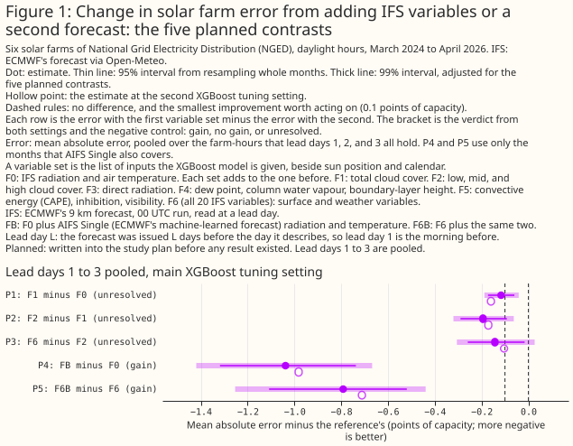
How to read the numbers. Every error is a mean absolute error as a percentage of a farm's capacity, and a difference of 0.1 is 0.1 percentage points of capacity, called "points". A row is one daylight hour at one farm. A contrast is the error of one variable set less the error of another, so a negative contrast is a gain, everywhere on this page. Where the text says an input lowers the error by 0.12 points, the bracket shows the difference as −0.12. A bracket holds a 95% interval from resampling whole months, unless the text says 99%. Five planned contrasts are tested together, so their intervals are set at 99%. A gain is resolved if the interval's upper bound is below −0.1 points, the smallest improvement worth acting on. There is no gain if the interval's lower bound is above −0.1 points. Otherwise the result is unresolved. The plan was fixed before any result existed, and reviewers then read the first results (the first scientific review). A contrast is planned if the plan named it, post hoc if it was added after that review had seen results, and exploratory otherwise. "Main setting" and "second setting" refer to the two XGBoost tuning settings defined under Data and methods. The forecasts are the 00 UTC (coordinated universal time) run of every day. Lead day L means the run was issued L days before the day the run describes. Hours are labelled by their end, so 19 UTC is 18:00 to 19:00.
Variable sets and contrasts. The variable sets are F0, the minimal set (IFS radiation and air temperature); F1, which adds total cloud cover; F2, which adds the three cloud layers; and F6, all 20 IFS variables. Each of F1 to F6 includes every group before it in the table under Introduction. FP is F0 plus four variables (dew point, surface pressure, precipitation, wind speed) that the production service's IFS feed carries; the feed also carries long-wave radiation, which no variable set here includes. FB adds AIFS Single's radiation and temperature to F0, and F6B adds the same two variables to F6. P1 is F1 minus F0, P2 is F2 minus F1, P3 is F6 minus F2, P4 is FB minus F0, and P5 is F6B minus F6.
- Do extra IFS variables help predict solar farm output at lead days 1 to 3? Not one step at a time, by a resolved amount. Total cloud cover (P1) lowers the error by 0.12 points, the cloud layers (P2) by 0.19 points, and every other variable together (P3) by 0.14 points (pooled over lead days 1 to 3, 99% intervals [−0.19, −0.04], [−0.32, −0.06], and [−0.31, +0.03]). All three intervals straddle −0.1 points, so all three are unresolved. Twenty-five months of data cannot resolve effects this small. A preview of the interval widths, computed before any fit from the errors in the ERA5 study, predicted as much. ERA5 is a reanalysis: a weather model re-run after the event and corrected with observations. All 18 extra variables together (F6 minus F0) lower the error by 0.45 points (95% interval [−0.59, −0.32], exploratory). At the six lead days taken one at a time, the gain is 0.29 to 0.54 points.
- Does a second forecast help? Yes, on top of the single 9 km forecast. Adding AIFS Single's radiation and temperature to the minimal set lowers the error by 1.04 points (P4, 99% interval [−1.42, −0.67]), and adding the same two variables to all 20 IFS variables lowers the error by 0.79 points (P5, [−1.25, −0.44]). P4 and P5 are gains at both XGBoost tuning settings and against a control with the same number of columns. P4 and P5 use the 14 months from March 2025, when AIFS Single became operational, to April 2026. Both gains are measured on 14-month fits whose F0 is 0.4 to 0.7 points worse than F0 from the 25-month fits on the same rows, so part of the gain may come from the short training set.
- Does a second forecast help the production service? Probably by less, at most about 0.3 points on this evidence (the 99% interval's lower end is −0.29), and the study cannot resolve how much. The production service reads the IFS ensemble mean. On the same rows, adding the ensemble mean to the minimal set lowers the error by 0.96 points, about as much as AIFS Single does (0.96 against 1.04; the difference was not tested; post hoc). Adding AIFS Single to the ensemble mean lowers the error by 0.13 points (post hoc, 99% interval [−0.29, +0.02]). The base of that contrast is the minimal set with the 6-hourly ensemble mean in place of IFS's own radiation and temperature. By lead day, the change is +0.07 at lead day 1, a point estimate above zero that the study cannot tell from no change, −0.21 at lead day 2, and −0.25 at lead day 3. The per-lead-day values are post hoc and carry no intervals on this page. The single 9 km forecast has a higher raw radiation error against CAMS irradiance (the Copernicus Atmosphere Monitoring Service's satellite-derived estimate of past sunshine) than AIFS Single or the ensemble mean.
- Is it worth ingesting the 12 variables that only ECMWF's MARS archive serves, or another forecast? The pre-set rule returns "second forecast", and this page does not act on that outcome. MARS, the Meteorological Archival and Retrieval System, is ECMWF's full archive. The ERA5 study found that 12 ERA5 variables, whose operational IFS counterparts only MARS serves, give a gain of 0.13 points (unresolved by this page's rule; the ERA5 study's interval is 99.5%, not this page's 99%). The pre-set rule was fixed before any result existed. It asks for the second forecast if P5 is a gain. It asks for the MARS-only variables if P5 is not a gain and the ERA5 gain for them is resolved. Otherwise the routes are not separated. P5 is a gain, so the rule returns "second forecast". Neither number is the gain the production service would see, because P5 is measured on the single 9 km forecast and the ERA5 gain on a reanalysis. The closest comparison that this study and the ERA5 study offer is AIFS Single on top of the ensemble mean (0.13 points, unresolved, post hoc) against the 12 MARS-only variables on top of the 22 other ERA5 variables (0.13 points at the main setting, 99.5% interval [−0.18, −0.08]). The two point estimates are equal, but the contrasts differ in rows, months, base set, and interval level, and the AIFS Single interval runs from −0.29 to +0.02. The ERA5 gain may be smaller at forecast lead. The ratio behind that statement, about twice as much from ERA5's cloud variables as from IFS's, was measured for the cloud variables at lead day 1 only.
- Which variables should the production service ask Dynamical.org to add? The production service should request total cloud cover first, which here means the one group in the free open-data feed that was tested on top of FP, on post hoc evidence. Added to FP, total cloud cover lowers the error by 0.13 points at the main setting and 0.15 at the second (pooled over lead days 1 to 3, 99% intervals [−0.18, −0.07] and [−0.22, −0.09], unresolved). Adding the three cloud layers as well lowers the error by 0.28 and 0.27 points (99% intervals [−0.39, −0.18] and [−0.38, −0.16], a gain at both settings). The layers' own step, from FP plus total cloud cover, is 0.15 and 0.11 points (unresolved). The free open-data feed that Dynamical.org repackages does not carry the layers. These contrasts are post hoc, so they carry the caveats listed under Limitations (Figure 9b). All 14 variables beyond FP together lower FP's error by 0.36 points (F6 minus FP, 95% interval [−0.44, −0.27], exploratory, main setting only), and 8 of those 14 are not in the free feed.
- Does the production service need a second IFS feed, for the cloud layers or the direct beam, which ECMWF's free open-data subset does not carry? Not on this evidence, although the rule as written before any result says yes. The production service gets IFS from Dynamical.org, which repackages ECMWF's free open-data feed. Removing the cloud layers from all 20 variables raises the error by 0.074 points at the main setting, more than the shuffled control's 0.035. The pre-set rule, applied at the one setting the rule named, therefore recommends a second feed. After the first scientific review, the same run at the second setting gave a raise of 0.057, below its control's 0.101. Both raises are below 0.1 points. Requiring both settings to agree was added after the results were seen, so the both-settings reading is post hoc. The production feed also carries long-wave radiation, a cloud signal that this study did not test.
- What can the study support? Statements about the 9 km IFS forecast and the AIFS Single forecast at six farms in one county, at lead days 1 to 3, over 25 months (14 for the second forecast). Three limits matter most. Every planned gain is measured on top of a single deterministic 9 km forecast, the farms share weather, and 25 months give wide intervals.
How this page was made. The research question came from a human. Everything else — the code behind every result, the analysis, the figures, and the text — was written by Claude, Anthropic's AI model (for this page, Claude Sonnet 5.5, Claude Sonnet 5, and Claude Opus 5.5). Several independent Claude reviewers have checked the method, the evidence, and the prose adversarially.
Key findings
- The forecast's error rises from about 10% of capacity at lead day 1 to about 15% at lead day 9 for the minimal set, and the full set lowers the error by 0.29 to 0.54 points. On the farm-hours that all six lead days hold, F0's error is 10.0% at lead day 1 and 15.4% at lead day 9. On the same farm-hours, F6 minus F0 is −0.41 points at lead day 1 and −0.31 at lead day 9 (Figure 3). The contrast values in the questions and answers above use each lead day's own rows.
- At lead day 1, the cloud variables gained about half as much in the IFS forecast as in ERA5 on the same rows (exploratory): 0.33 points against 0.67. All 20 IFS variables gained 0.39 points and ERA5's 34 variables 1.20 points. The two full sets hold different variables (Figure 7).
- P4, the gain from adding a second forecast to the minimal set, is larger at lead days 2 and 3 than at lead day 1, and the study does not establish why (post hoc). P4 is −0.79, −1.11, and −1.22 points at lead days 1 to 3. The differences between lead days have no interval. The radiation error of the single 9 km IFS forecast against CAMS irradiance rises by 26% from lead day 1 to 3, against 18% for AIFS Single and 20% for the ensemble mean, so "rises fastest" is a ranking of point estimates. Adding the ensemble mean to F0 gives a gain that does not grow with lead day (−0.96, −0.90, and −1.03 points) (Figure 10).
- One winter fold enlarges P5's lead-day-3 gain. The only winter months of the 14 blend months are held out together, so the XGBoost model that scores those winter months trains on no winter row. Without that fold, P5 at lead day 3 is −0.73 points, not −1.02. P4 at lead day 3 is −1.04 without the winter fold and −1.22 with it.
- As in the ERA5 study, the full set is worse than the minimal set at low sun. At 06, 07, 19, and 20 UTC, F6 is worse than F0 by 0.08 to 0.29 points (Figure 8).
- Shuffled copies of the variables tend to make the error worse. One shuffled cloud column made F0's error 0.02 points worse, and 14 shuffled columns made F2's error 0.04 points worse. Both intervals include zero. Two shuffled copies of AIFS Single's variables made the error of F0 worse by 0.21 points [+0.11, +0.32], so the 14-month fits are noisy (Figure 5).
Introduction
The question is which variables of IFS, beyond its solar radiation and temperature, help a day-ahead to three-day-ahead solar power forecast, and whether a second weather forecast would do more. The ERA5 study asked which variables of ERA5 help estimate solar output. ERA5 is a reanalysis, a weather model re-run after the event and corrected with observations. Some of ERA5's fields are corrected with observations taken after the hour the fields describe, so those fields can hold information that no forecast has. The ERA5 study found signs that part of the ERA5 study's gain came from ERA5's cloud fields having seen observations from after the hour. This study repeats the question on real past forecasts, at the lead times a forecast service would use. Three decisions depend on the answer: which variables to ask Dynamical.org to add, whether the production service needs a second IFS feed, and whether to ingest the 12 MARS-only variables (variables that only ECMWF's MARS archive serves) or another forecast.
| Group | Adds | IFS variables (Open-Meteo names) | In ECMWF's free open-data feed |
|---|---|---|---|
| F0 | the minimal set | shortwave_radiation, temperature_2m |
yes |
| F1 | total cloud | cloud_cover |
yes |
| F2 | cloud layers | cloud_cover_low, cloud_cover_mid, cloud_cover_high |
no |
| F3 | direct radiation | direct_radiation |
no |
| F4 | humidity, column water, boundary layer | dew_point_2m, total_column_integrated_water_vapour, boundary_layer_height |
the first two |
| F5 | convection and visibility | cape, convective_inhibition, visibility |
no |
| F6 | surface and weather state | surface_temperature, snow_depth, snowfall, precipitation, surface_pressure, wind_speed_10m, wind_gusts_10m |
yes |
| FP | the production reference | F0 plus dew_point_2m, surface_pressure, precipitation, wind_speed_10m |
yes |
Each variable set F1 to F6 includes every group above its own row in the table. The free feed's
availability was read from ECMWF's open-data index files for the 2026-10-09 00 UTC run. The feed
carries mucape, a different convective available potential energy (CAPE) diagnostic from the
cape field Open-Meteo serves.
Three contrasts add variables to FP: F6 minus FP (exploratory), (FP + total cloud) minus FP, and (FP + total cloud + layers) minus FP (both post hoc). FP is the production feed's current variables other than long-wave radiation. FP contains none of F1's or F2's cloud columns, so F1 minus FP and F2 minus FP swap variables rather than add them. A column is an input variable given to an XGBoost model, and the columns include sun position and calendar variables beside the weather variables. FP has 13 columns. FP + total cloud adds F1's column to FP, and FP + total cloud + layers adds F1's and F2's four columns. Both were fitted at both XGBoost tuning settings.
Data and methods
The rows are 43,921 daylight farm-hours at 6 farms, from March 2024 to April 2026, and the forecasts are the 00 UTC IFS run of each day. The rows, the targets, and the solar geometry come from the ERA5 study, so the cleaning rules are the same: hours that hold a zero half-hour are dropped, hours the network operator constrained are scored but not trained on, and output is a fraction of each farm's capacity (a high percentile of its metered output). Lead days 1, 2, 3, 5, 7, and 9 are scored.
Each hour reads the forecast issued L days earlier, averaged to the hour as the ERA5 study averaged ERA5. Lead day L of an hour is read from the run issued L days before the hour's day, at forecast hour 24L plus the hour of day. Instantaneous variables are the mean of the values at the two ends of the hour, as the ERA5 study averaged ERA5's snapshots. Radiation is the preceding-hour mean, precipitation and snowfall are the preceding-hour sums, and gusts are the preceding-hour maximum, as Open-Meteo serves them. Open-Meteo is the archive that served the IFS forecasts. Open-Meteo interpolates values beyond forecast hour 90, which includes a few evening hours of lead day 3. Lead day 5 is read from 3-hourly output and lead days 7 and 9 from 6-hourly output, so every hour at those lead days is interpolated. That interpolation contributes to the error's rise with lead day.
IFS changed model cycle twice in the archive, so the study cuts folds inside two eras. Cycle 49r1 went live on 2024-11-12 and cycle 50r1 on 2026-05-12. The study drops 2024-11, and drops 2026-05 and everything after. The first era starts on 2024-03-15, so the first era's first month is a 17-day part-month. The two eras hold 25 months. Each farm's rows in each era are cut into five folds, blocks of whole months, with the same fold for the same hour at every lead day. Every fold is scored by XGBoost models trained on the other folds of the same farm, so every score comes from months the XGBoost model never saw.
One XGBoost model is fitted per farm, lead day, and variable set, at two tuning settings. XGBoost is a gradient-boosted tree model. Each XGBoost model is fitted three times with different random seeds. The main setting uses trees of depth 6, learning rate 0.05, 500 boosting rounds, minimum child weight 20, and L2 penalty 1. The second setting uses trees of depth 4, learning rate 0.03, 1,200 boosting rounds, minimum child weight 50, and L2 penalty 5. The plan required both settings to agree for the planned verdicts P1 to P5. Extending the both-settings requirement to the drop-one rule was done after the first scientific review, so that extension is post hoc. Intervals come from resampling whole months, paired across variable sets, with one of the three seeds drawn in each resample. The planned contrasts use 10,000 resamples and the other contrasts 2,000. The month bootstrap ignores the dependence between months scored by the same fitted models, and with 14 or 25 months a 99% percentile interval is likely to be too narrow. The 17-day part-month counts as one month in the resampling. The report prints 95% intervals for the low-sun hours, the ERA5-against-IFS ratio has no interval, and the study does not count its exploratory contrasts.
The planned contrasts (P1 to P5) are on farm output only, pooled over lead days 1 to 3 with equal weight. The planned contrasts use the 99% level. The verdict labels are the ones defined under How to read the numbers.
Each planned contrast is checked against a control with the same number of columns, in which the new variables are shuffled. The shuffling is within each farm, month, and hour of day. A planned contrast must also be a gain against its control. A positive control (a control expected to help) adds CAMS irradiance. The drop-one rule asks whether removing a group from the full set raises the error by more than a control with the same number of shuffled columns does.
The second forecast is AIFS Single, and the rows from the 14 months on which it exists are called the blend rows. AIFS Single runs on a grid of about 31 km at 6-hour steps. It became operational on 2025-02-25, so the blend rows start in March 2025. The partner is AIFS Single, the second forecast whose two columns (radiation and temperature) are added to a variable set. A blend arm is a variable set that includes the partner, such as FB and F6B. AIFS Single's radiation is a 6-hourly mean that is rebuilt hourly through a clear-sky index. A clear-sky index is measured sunlight divided by the sunlight a cloudless sky would give. The temperature of AIFS Single is interpolated to the hour. The partner's two columns come from the AIFS Single store only, with no CAMS or power value in them. F0 and F6 are refit on the blend rows, so each blend contrast compares variable sets on identical rows.
The IFS ensemble mean used here is 6-hourly, coarser than the 3-hourly mean the production service reads. The ensemble-mean contrasts are post hoc. It is the 6-hourly ensemble mean from the ensemble-mean blend study.
Results
IFS forecasts against CAMS irradiance on three days
IFS and CAMS agree on the shape of a day and disagree in detail, more at longer leads. Figure 2 draws IFS's radiation at lead days 1 and 7, and its cloud covers at lead day 1, against CAMS irradiance on three days at one farm: the clearest, most variable, and dullest by CAMS's clear-sky index.
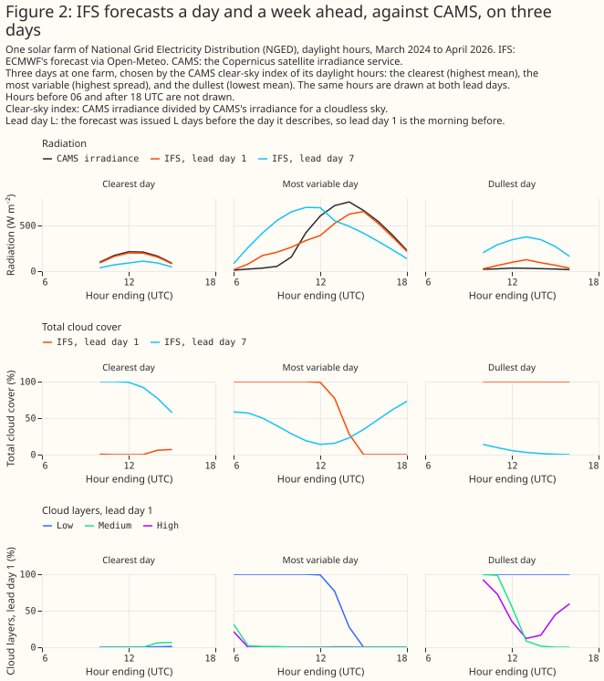
The error rises with lead day, and the extra variables gain little
The minimal set's error rises from 10.0% of capacity at lead day 1 to 15.4% at lead day 9, and the full set lowers the error by 0.29 to 0.54 points. The full set (F6) beats the minimal set (F0) by 0.39 points at lead day 1, 0.50 at lead day 2, 0.48 at lead day 3, 0.45 at lead day 5, 0.54 at lead day 7, and 0.29 at lead day 9. The six gains are exploratory numbers on each lead day's own rows. Figure 3 plots the farm-hours that all six lead days hold, where the gains are 0.41, 0.49, 0.47, 0.44, 0.55, and 0.31 points.
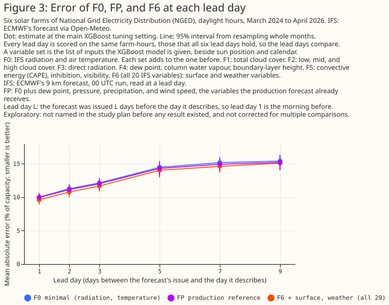
The XGBoost models track measured output on unseen months
Predictions follow the measured output on months the XGBoost models never saw. Figure 4 draws three days at every farm, chosen separately for each farm by CAMS's clear-sky index, with each farm's error for four variable sets: F0, F2, FP, and F6. The farms are labelled A to F.
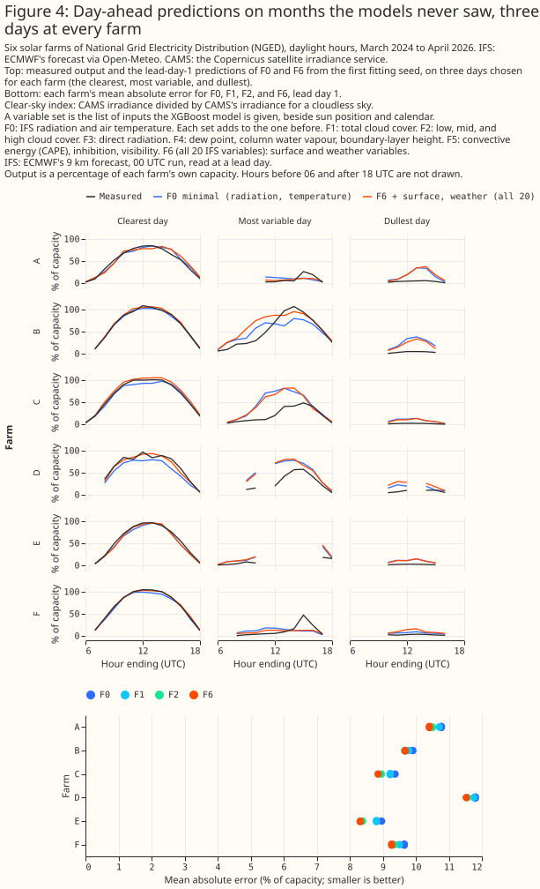
Controls
The positive control lowers the error by 4.7 points at lead day 1, so the method detects a large effect, but the shuffled controls show only small penalties. Adding CAMS irradiance to F2 gives an error of 5.0% at lead day 1, against 9.7% for F2. One shuffled total-cloud column makes F0 worse by 0.02 points pooled over lead days 1 to 3, and 14 shuffled columns make F2 worse by 0.04 points. Both intervals include zero at the main setting. The controls for AIFS Single, on the 14 blend months, are clearer: two shuffled copies of AIFS Single's variables make F0 worse by 0.21 points and F6 worse by 0.09 points. The controls do not change any verdict.
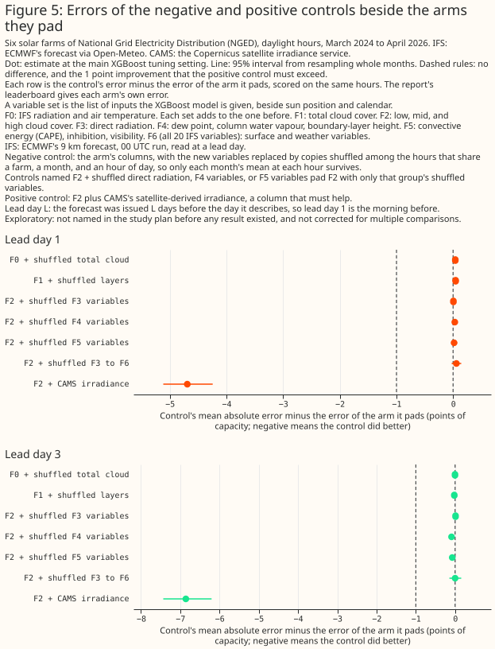
Every variable set at every lead day
The leaderboard gives each variable set's error at each lead day, with intervals. The leaderboard's intervals overlap more than the paired differences of Figure 1 do, because every variable set's error rises and falls with the weather.
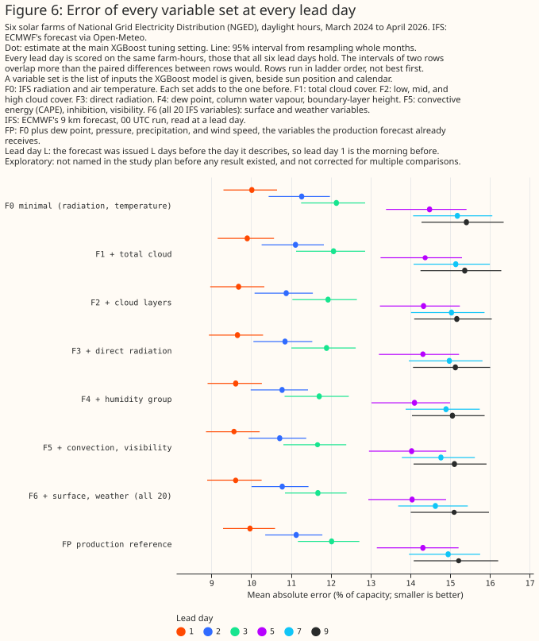
Pooled over lead days 1 to 3, the two cloud steps lower the error most, by 0.12 points (F1) and 0.19 points (F2), and no later step lowers the error by more than 0.10 points. Figure 6b shows variable sets F0 to F6 as a chain of steps. Each orange line is the 95% interval of one step's paired difference, drawn from the dot of the row below, so the interval compares each variable set with the one before on the same months. The orange line is not the uncertainty of the step's dot, and the intervals of different steps must not be added, because the same months are resampled for every step. The F6 step raises the error by 0.04 points. The F1 and F2 steps are the planned contrasts P1 and P2, and their 99% intervals are in Figure 1. Every other step is exploratory. Every step depends on the order in which the groups were added.
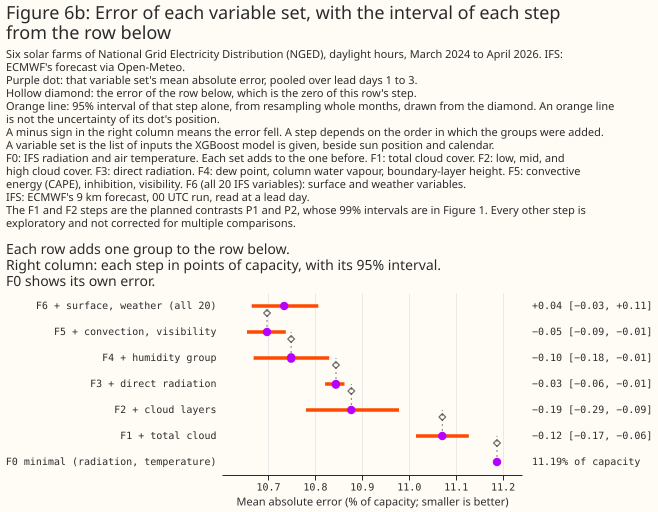
The gain at forecast lead is smaller than the ERA5 study showed
At lead day 1 on the same rows, ERA5's full set lowers the error by 1.20 points and IFS's full set by 0.39 points. The ERA5 study's screen was its comparison of ERA5 variable sets at the same hour, which made no claim about forecasts. On the like-for-like cloud sets, ERA5's total and layered cloud cover give 0.67 points against IFS's 0.33 points, about twice as much. The two full sets hold different variables, 34 ERA5 variables against 20 IFS variables. The gap is consistent with ERA5's cloud fields having seen later observations than its solar radiation, with the difference between a same-hour estimate and a forecast, and with ERA5's older model cycle and coarser grid. The page leaves all three explanations open. The ratio of the two gains has no interval.
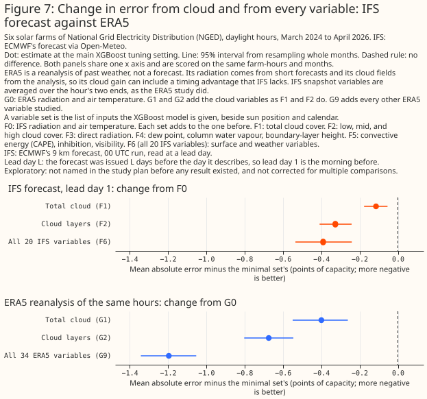
The gain by season, cloud regime, and hour
The full set is worse than the minimal set at low sun. F6 is worse than F0 by 0.08 points at 06 UTC, 0.16 at 07, 0.29 at 19, and 0.13 at 20 UTC. The ERA5 study found the same pattern. The pattern is consistent with the penalty coming from the farms' low-sun output. The pattern is equally consistent with a wide variable set overfitting where the signal is weakest. The report prints 95% intervals for these hours, and this page does not. Figure 8 shows the gain by ERA5 cloud regime, season, and hour of day, with the hour-of-day panel in percent of F0's error.
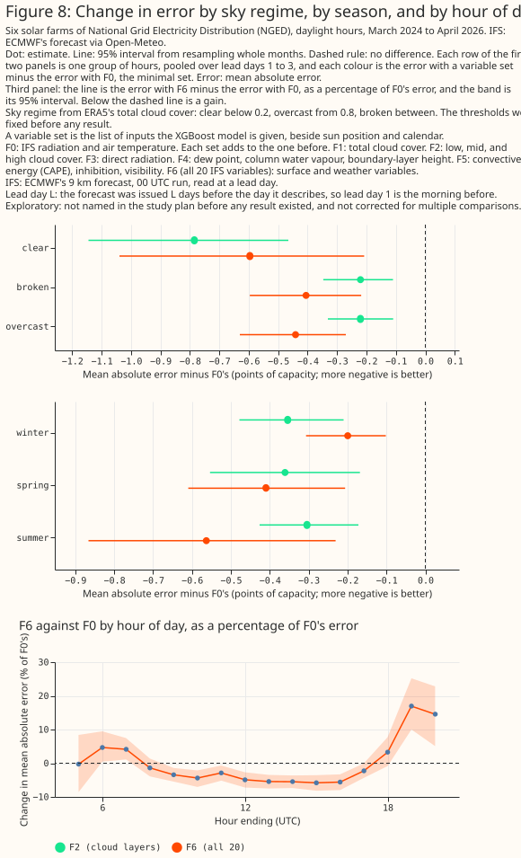
Removing one variable group from the full set
Removing one group from all 20 variables raises the error by less than 0.1 points when pooled over lead days 1 to 3. The rule asks that removing a group raises the error by more than a control with the same number of shuffled columns does. Removing the cloud layers raises the error by 0.074 points at the main setting and 0.057 at the second, against controls of 0.035 and 0.101. The rule as written before any result applied the test at the main setting only, where the cloud layers pass. The both-settings version is post hoc, as is the comparison with 0.1 points. The both-settings version also changes the answer for humidity, column water, and boundary-layer height. The humidity, column-water, and boundary-layer group raises the error by 0.036 points at the main setting, which passes its control by 0.002 points, and by 0.016 points at the second setting, which fails its control. The group's raise is 0.118 points at lead day 3 and about zero at lead days 1 and 2 (post hoc). The raises and their margins over the controls have no intervals. The cloud-layer control moves from 0.035 to 0.101 between the settings, so neither a pass nor a fail is resolved.
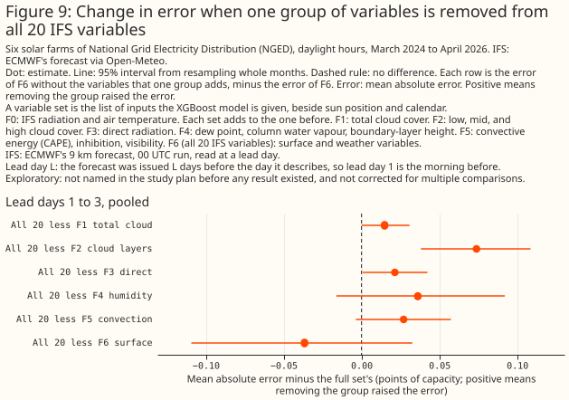
Which cloud variables to add to the production reference
Request total cloud cover from Dynamical.org first, as the one free-feed group tested on FP and on unresolved evidence of 0.13 to 0.15 points. Added to FP, total cloud cover lowers the error by 0.13 points at the main setting and 0.15 at the second (99% intervals [−0.18, −0.07] and [−0.22, −0.09], unresolved). Adding the three cloud layers as well lowers the error by 0.28 and 0.27 points (99% upper bounds −0.18 and −0.16, a gain at both settings). The layers' own step is 0.15 and 0.11 points (unresolved), and the free open-data feed does not carry the layers. The drop-one result under "Removing one variable group from the full set" still governs the second-feed decision, because that rule asks whether the full set relies on the layers and the layers' own step is unresolved here. These contrasts are post hoc and exploratory, and have no negative control (a fit padded with shuffled copies of the same inputs) to show how much of a gain extra columns produce alone. Figure 9b draws 95% step intervals at the main setting, and the 99% intervals that set the verdicts are in the text.
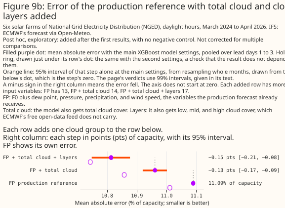
A second forecast and the ensemble mean
Adding AIFS Single to the single 9 km forecast lowers the error by about 1 point, and adding the IFS ensemble mean does the same. Panel 1 of Figure 10 shows the three gains that the decision between the MARS-only variables and a second forecast compares: P4, P5, and the ERA5 study's gain for the MARS-only variables. Panel 2 shows the post hoc contrasts: AIFS Single added to the ensemble mean (−0.13 points, unresolved) and the ensemble mean added to F0 (−0.96 points, a gain; 0.96 against AIFS Single's 1.04, a difference the study did not test).
The single 9 km forecast has the highest raw radiation error of the three forecasts at every lead day, and its error rises fastest. Against CAMS irradiance, the radiation of Open-Meteo's 9 km IFS forecast has a raw error of 65.7, 73.3, and 82.7 W m⁻² at lead days 1 to 3, a rise of 26%. "Rises fastest" is a ranking of point estimates, because the differences between lead days have no interval. AIFS Single's raw error is 62.0, 66.9, and 73.1 (a rise of 18%), and the ensemble mean's is 61.4, 67.6, and 74.0 (20%). One possible explanation, which the study did not test, is that a sharp forecast is wrong twice when it puts a cloud in the wrong hour, and a smoother forecast hedges. The explanation does not fit the ensemble mean's gain, which does not grow with lead day.
The XGBoost models on the blend rows train on fewer months than the main fits, so P4 and P5 are measured against a reference that had less training data. Each XGBoost model on the blend rows trains on 11 or 12 of the 14 months. In 10 calendar months, the scored month has no training row of the same calendar month. F0 refit on the blend rows is 0.4 to 0.7 points worse than F0 from the main fits on the same rows.
One winter fold holds the only winter months, so its XGBoost models train on no winter row. The fold-level differences are printed in the report: P4 and P5 are negative in each of the five folds at every lead day. The direction holds for both. Pooled over lead days 1 to 3, P4 is −1.04 points with the winter fold and −1.01 without it, so its size holds. P5 is −0.79 points with the winter fold and −0.67 without it, so its size shrinks.
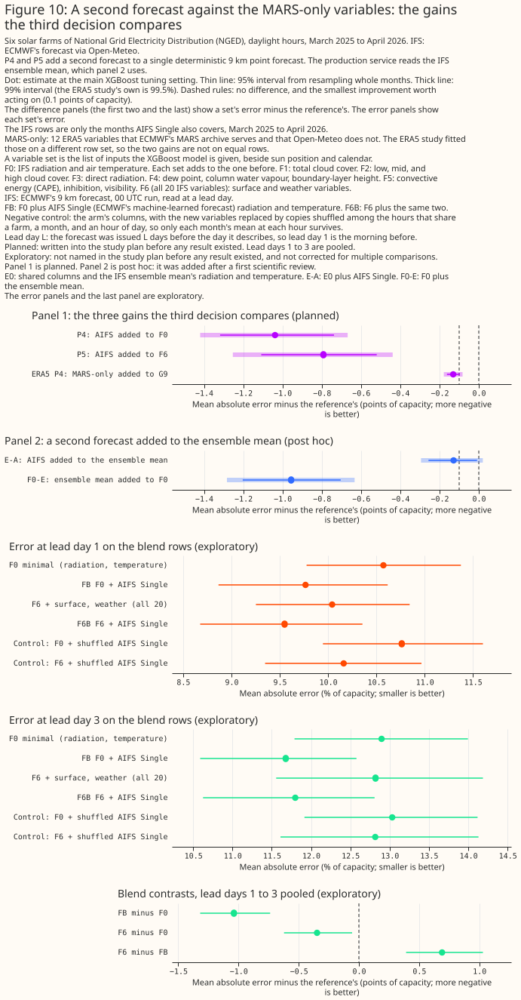
Discussion: what to use
- Request total cloud cover from Dynamical.org first, and treat the evidence as post hoc. Added to FP, total cloud cover lowers the error by 0.13 points (unresolved), and total cloud cover with the three cloud layers by 0.28 points (a gain at both settings). The layers are not in the free open-data feed that Dynamical.org repackages, so the 0.28-point gain needs a source other than the free feed. All 14 variables beyond FP together lower FP's error by 0.36 points (exploratory, main setting only), and 8 of those 14 are not carried by the free feed. The gains are measured on top of a single 9 km forecast and may be smaller on the ensemble mean. No fit measured the other groups of the free feed added to FP one at a time.
- Do not take a second IFS feed for the cloud layers on this evidence. The cloud layers pass the pre-set drop-one rule at the main setting only, and their raise is below 0.1 points at both settings. Their gain on top of FP is unresolved at 99% (the layers' own step is 0.15 and 0.11 points), so the page does not treat it as established. The production feed's long-wave radiation, a cloud signal, was not tested.
- Do not choose between the MARS-only variables and a second forecast from P5. The pre-set rule returns "second forecast". On the ensemble mean the production service reads, a second forecast adds about 0.13 points, which is unresolved. That point estimate equals the 0.13 points the ERA5 study found for the MARS-only variables, but the two contrasts differ in rows, months, base set, and interval level. A reanalysis gains about twice what a forecast does at lead day 1 on the cloud sets, so the MARS-only variables' gain at forecast lead may be below 0.13 points, although the ratio was measured for the cloud variables at lead day 1 only. The 3-hourly ensemble mean the production service reads may do better than the 6-hourly mean used here, which would leave a second forecast even less to add.
- Do not read the 1-point gain as the value of AIFS Single. The ensemble mean gives a gain of similar size over the 9 km forecast (0.96 against 1.04; the difference was not tested), so the gain does not appear specific to AIFS Single.
Limitations
- Every planned gain is measured on top of a single deterministic 9 km point forecast. A smoother reference, such as the ensemble mean, leaves less for any added input to fix, so every planned gain here is likely to be smaller in production.
- The production service's 3-hourly ensemble mean is not tested. The ensemble mean used here is on 6-hourly steps.
- Twenty-five months are few. The intervals resample whole months and are approximate. The resampling ignores the dependence between months scored by the same fitted models, so 99% intervals are likely to be too narrow. The contrasts on the blend rows use 14 months.
- The first era includes a 17-day part-month, and November is scored with no November in training. The blend rows have 10 calendar months with no training row of the same calendar month.
- The newest IFS cycle is not scored. Cycle 50r1 is in use from 2026-05-12. The months since 2026-05-12 are too few to cut into folds.
- The planned contrasts were checked against controls with the same number of columns, but the exploratory ones were not. The page does not correct exploratory intervals for multiple comparisons, and does not count its exploratory contrasts. Of the exploratory contrasts, 32 lie near the 0.1-point line and have no second-setting run.
- The contrasts that add cloud variables to FP compare variable sets with different column counts. FP + total cloud has 14 columns and FP + total cloud + layers 17, against FP's 13, and no negative control pads FP with shuffled copies of the same columns. The controls of P1 and P2 show the penalty for the ladder variable sets only.
- Some analyses are post hoc. Several analyses were added after the first scientific review: the contrasts that add cloud variables to FP, the ensemble-mean contrasts, the winter-fold reading, the raw-error table, the second-setting drop-one runs, and the rule that both settings must agree for the drop-one test (the plan required agreement for P1 to P5 only). The both-settings rule reversed the pre-set outcome of the second-feed decision. The report labels each post hoc analysis. Only P1 to P5, their controls, their five verdicts, and the three decision rules as written were fixed in the plan before any result existed.
- ICON-EU was not tested as a second forecast.
Scope
The page says nothing about wind, other regions, or leads beyond 9 days. The study tests Open-Meteo's 9 km IFS forecast and AIFS Single only. The IFS ensemble also runs at 9 km and the production service reads it on a 0.25-degree grid, as the ensemble mean, which is smoother than the single 9 km forecast because it averages members.
Data and code availability
IFS forecasts come from Open-Meteo's Single Runs archive, AIFS Single and the ensemble mean from
the Dynamical.org store, and CAMS irradiance from the Copernicus Atmosphere Data Store. The page
contains modified Copernicus Atmosphere Monitoring Service information. The farms' output is private
to National Grid Electricity Distribution (NGED) and appears only as fractions of each farm's
capacity under labels A to F. The code is in studies/ifs_solar_variables/ and packages/studies/.
XGBoost runs on a graphics processing unit with colsample_bytree=1.
Reproducing the figures
uv run python studies/weather_downloads/fetch_open_meteo_ifs_solar_variables.py
uv run python studies/ifs_solar_variables/ifs_ladder_build_dataset.py
uv run python studies/ifs_solar_variables/ifs_ladder_build_dataset.py --ens-only
uv run python studies/ifs_solar_variables/ifs_ladder_fit.py --view ladder --target both
uv run python studies/ifs_solar_variables/ifs_ladder_fit.py --view blend
uv run python studies/ifs_solar_variables/ifs_ladder_fit.py --view ens --lead-days 1 2 3
uv run python studies/ifs_solar_variables/ifs_ladder_fit.py --view extra_sensitivity --lead-days 1 2 3
uv run python studies/ifs_solar_variables/ifs_ladder_report.py
uv run --with vl-convert-python python studies/ifs_solar_variables/ifs_ladder_charts.py